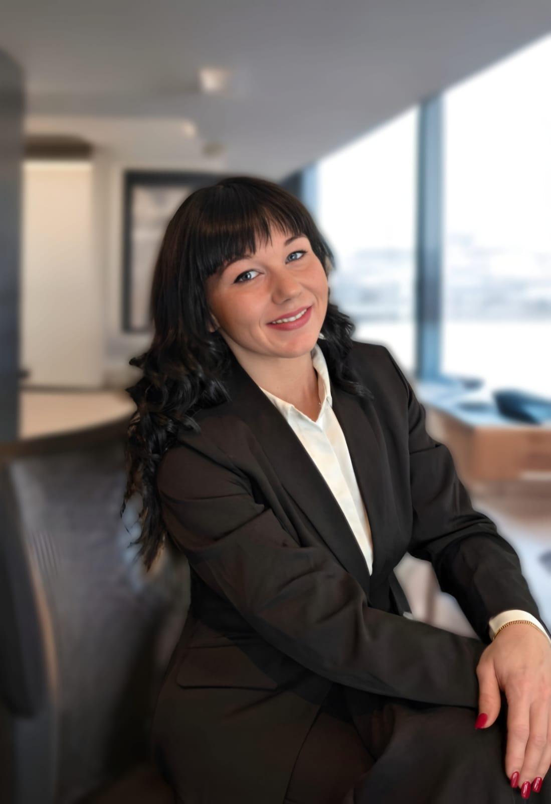
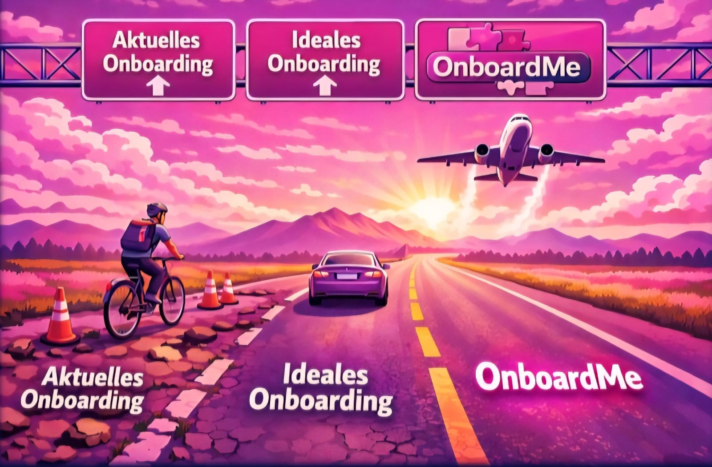

Schön, dass Sie mehr über mich und meinen beruflichen Weg erfahren möchten.
Kauffrau für Digitalisierungsmanagement, Fachwirtin für ambulante medizinische Versorgung und DEKRA-zertifizierte Fachfrau für Projektmanagement.

Mein beruflicher Weg verbindet Menschlichkeit und medizinische Erfahrung mit Projektmanagement und Digitalisierung – eine Kombination aus Herz und Köpfchen. Mein persönliches Ziel ist eine Position, in der ich diese Erfahrungen langfristig sinnvoll zusammenbringen, weiter ausbauen und mit meiner Arbeit einen echten Mehrwert schaffen kann.
Privat interessiere ich mich für vieles, was mit Technik, Gestaltung und praktischen Lösungen zu tun hat. Ich beschäftige mich gern mit Autos, digitalen Anwendungen oder neuen technischen Möglichkeiten – einfach, weil ich verstehen möchte, wie Dinge funktionieren.
Gleichzeitig liebe ich Inneneinrichtung und gebe alten Möbeln gern eine zweite Chance oder sogar eine neue Funktion. Dieses „Was könnte man daraus machen?“ beschreibt mich wahrscheinlich ganz gut – auch bei der Arbeit sehe ich oft Möglichkeiten, wo andere zunächst nur den bestehenden Zustand sehen.
Als Mutter ist mir außerdem wichtig, wie sich unsere Gesellschaft, Technik und besonders die Gesundheitsversorgung weiterentwickeln. Zukunft ist für mich deshalb nicht nur ein berufliches Thema.
In meiner Region kann ich mir eine Vollzeittätigkeit auch vollständig vor Ort vorstellen. Bei größerer Entfernung bin ich offen für hybride oder remote Arbeitsmodelle.
Der Weg ist das Ziel.
WBS TRAINING AG
Digitalisierung, Projekt- und Prozessmanagement, Daten- und Prozessanalyse sowie IT-Grundlagen.
WBS-Abschluss: 90 % · IHK-Abschluss: 75 Punkte · Digitale Entwicklung von Prozessen: 81 Punkte
Praktikum im Rahmen der Umschulung mit Einblicken in das technische und kaufmännische IT-Umfeld, Dokumentation, Lizenz- und Vertragsverwaltung sowie verschiedene IT-Systeme. Hier entstand auch die Ausgangslage für mein IHK-Abschlussprojekt „OnboardME“.
DEKRA-Zertifikation
Projektplanung, -steuerung und -controlling sowie Qualitäts-, Risiko- und Kommunikationsmanagement.
Ärztliche Assistenz / Studienassistentin
Schnittstellenarbeit zwischen verschiedenen Berufsgruppen, Qualitätssicherung, Schlaganfalldokumentation sowie Organisation und Koordination klinischer Abläufe.
Zentrum für Klinische Studien Leipzig
120 Unterrichtsstunden mit ICH-GCP, SOPs, Dokumentation, Monitoring/Audits, Statistik und Informationsmanagement.
Hochschule Fulda · 2 Hochschulsemester
Hochschulzugang über den hessischen Modellversuch für beruflich Qualifizierte.
Medizinische Fachangestellte · Zentrales Aufnahme- und Ambulanzzentrum
Ambulante und stationäre Patientenaufnahme, Koordination diagnostischer Termine und medizinische Assistenz.
Carl-Oelemann-Schule / Landesärztekammer Hessen
Mit Zusatzqualifikationen u. a. als Qualitätsmanagementbeauftragte, Ausbildungsbeauftragte und Datenschutzbeauftragte sowie in Praxisführung, Teamführung und Notfallmanagement.
Medizinische Fachangestellte
Praxisorganisation, Termin- und Abrechnungsprozesse, Patientenbetreuung und medizinische Assistenz.
Medizinische Fachangestellte
Administrative Patientenaufnahme, Koordination und Unterstützung der Abläufe in der Zentralen Notaufnahme.
KfH Nierenzentrum Kassel
Start meines beruflichen Weges im Gesundheitswesen.
Berufsschulabschluss: Gesamtnote 1,7.

Sie müssen sich OnboardMe nicht vorstellen – Sie können es selbst erleben. Im Video sehen Sie den Prototyp in Aktion.
Projektplanung & -steuerung · Prozessanalyse & -optimierung · Anforderungsmanagement · Risikomanagement · Soll-Ist-Controlling · Qualitätsmanagement · SOP-Erstellung
Digitale Transformation · digitale Geschäftsmodelle · digitale Lösungskonzepte · digitale Produktentwicklung · Prototyping · FlutterFlow / No-Code · UI/UX-Grundlagen · Nutzertests & Usability · Wirtschaftlichkeitsbetrachtung
Microsoft 365 · Datenbanken & SQL-Grundlagen · Netzwerk- & Systemgrundlagen · Virtualisierung · Windows / Windows Server · Linux-Grundlagen · Informationssicherheit & Datenschutz · HTML/CSS-Grundlagen · C-Grundlagen · technische Dokumentation
Praxis: MailStore · Securepoint · Centron
Klinische Abläufe · ambulante und stationäre Versorgung · medizinische Dokumentation · Qualitätsmanagement · Datenschutz & Vertraulichkeit · sicherer Umgang mit sensiblen Daten · Notfallmanagement · interdisziplinäre Koordination · klinische Studien / ICH-GCP
Ich freue mich auf ein persönliches Kennenlernen